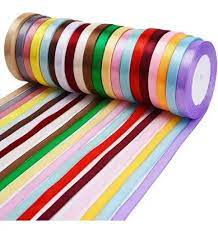
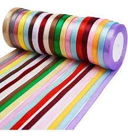
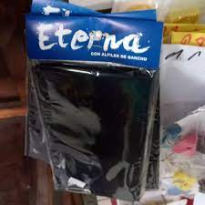
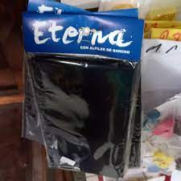

Raso
La cinta de raso es una de las cintas de tela más usadas dentro de la cintería fina. Las principales características de este producto son su sedosidad y su brillo que le confiere el tipo de ligamento que se utiliza para fabricarla.
 

Gross
En resumen, se trata de una cinta acanalada de doble cara, por lo que se puede considerar reversible, se fabrica principalmente en poliéster, aunque las hay en otros materiales tales como el rayón o el algodón. Antiguamente esta importante cinta de tela se fabricaba con telares convencionales.
Organza
Las cintas de organza, también conocidas como cintas de muselina o cintas de cristal, son cintas ideales para la decoración de tocados y mueblario aunque también son muy utilizadas para la realización de tocados.
Moña escolar
La moña escolar es una cinta de raso o de acrocel, de unos 10 cm de ancho. Se utiliza junto con la tunica blanca como uniforme en las escuelas.
 
